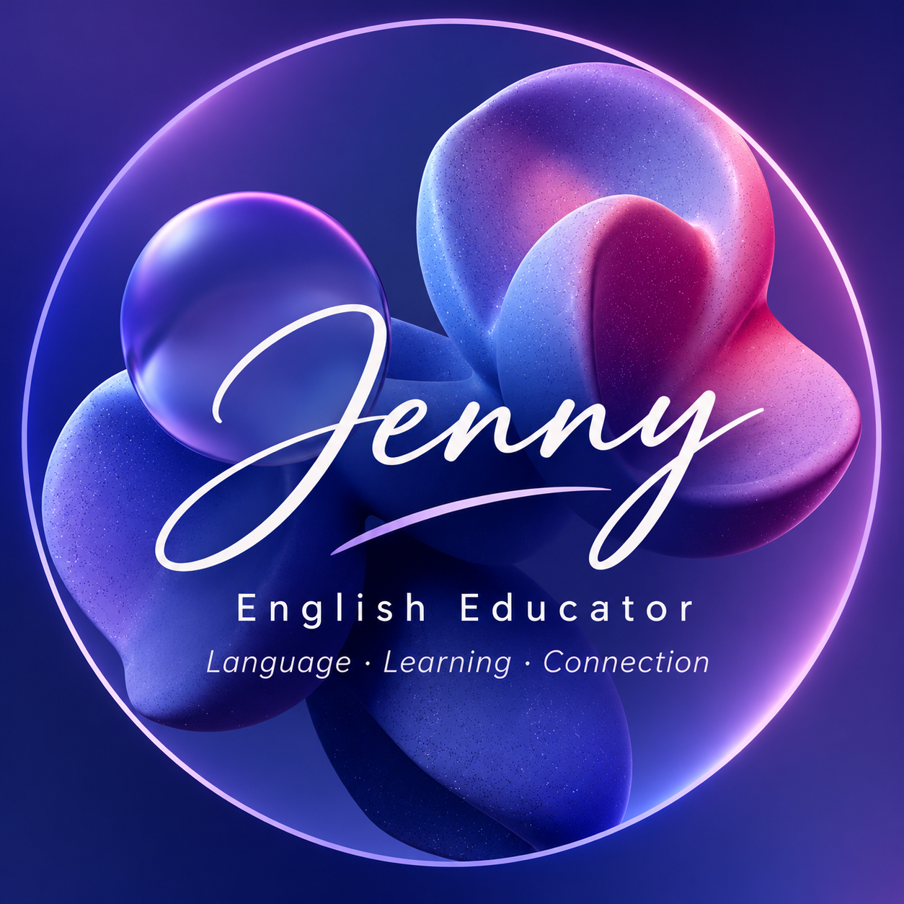

以学习者为中心
每个人的目标、节奏和起点都不同。先理解学习者，再设计适合他的学习路径。
英语教师 · English Educator
Hi, I'm Jenny. 我相信，学习一门语言不只是记住单词和语法，更是获得表达自己、理解他人和探索世界的勇气。

“A different language is a different vision of life.”
— Federico Fellini01 / ABOUT
一位相信语言有温度的英语教师。
CURIOUS BY NATURE我希望帮助每一位学习者，找到属于自己的英语声音。
对我来说，好的英语学习体验应该既有清晰的方法，也有真实的交流。它可以从一个新单词、一段对话或一次勇敢的开口开始，慢慢积累成看见更大世界的自信。
这里之后可以补充你的教育背景、教学经历、擅长领域，以及一段更个人化的成长故事。
和我聊聊 ↗02 / MY APPROACH
每个人的目标、节奏和起点都不同。先理解学习者，再设计适合他的学习路径。
把语言放进生活、工作和兴趣里，让知识不止停留在练习册上。
允许试错，鼓励表达。每一次小小的进步，都值得被看见。
03 / WHAT I OFFER
以下是网站的课程展示版块。具体课程类型、适合人群和安排，可以根据你的实际教学服务进一步完善。
围绕真实话题练习表达，让英语更自然地融入日常交流。
↗根据学习目标与当前水平，梳理重点，建立可持续的学习节奏。
↗分享实用工具、阅读素材和学习方法，让日常积累更有方向。
↗课程内容为初版示例，正式发布前请替换为你实际提供的课程与服务。
从每天一个小表达开始，让输入和输出自然发生。
↗流利不是一夜之间发生的，而是在一次次尝试中建立的。
↗05 / SAY HELLO
无论是课程咨询、教学合作，还是关于语言学习的交流，都欢迎你联系我。